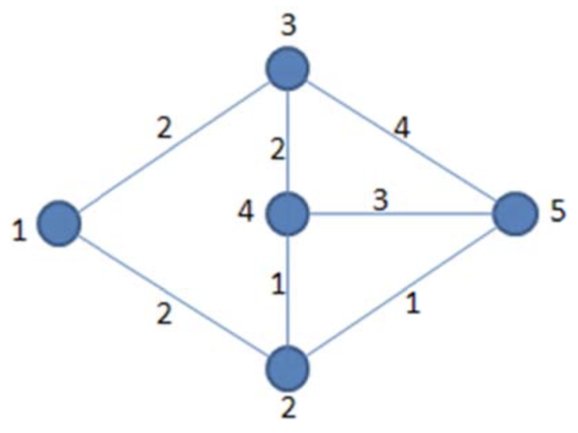

【样例说明】

如图，路径 1 → 2 → 4 → 3 → 5 → 2 → 4 → 5 对应的XOR 和为
2 XOR 1 XOR 2 XOR 4 XOR 1 XOR 1 XOR 3 = 6
当然，一条边数更少的路径 1 → 3 → 5 对应的 XOR 和也是 2 XOR 4 = 6。
【数据规模】
对于20%的数据，$N \le 100，M \le 1000，D_i \le 10^4$
对于50%的数据，$N \le 1000，M \le 10000，D_i \le10^{18}$
对于70%的数据，$N \le 5000，M \le 50000，D_i \le10^{18}$
对于100%的数据，$N \le 50000，M \le 100000，D_i \le10^{18}$
 Comet OJ
Comet OJ